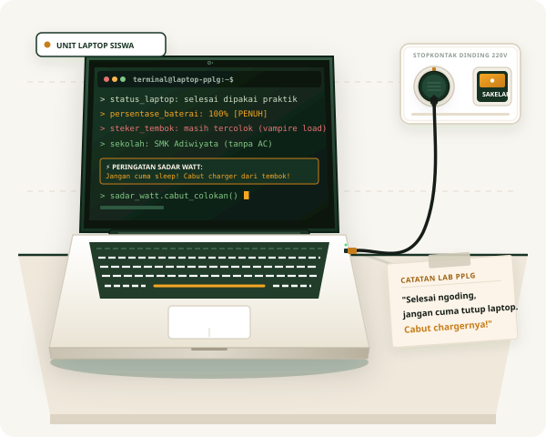

01. Charger Nancap Terus
Adaptor laptop dan HP yang ditinggal colok tetap menyedot 0,5 sampai 3 Watt tanpa henti.
Inisiatif XI PPLG-3 • Sekolah Adiwiyata SMK Wikrama Bogor
"Listrik jalan terus kalau kita nggak sadar."
Sekolah kita sudah keren karena bebas AC. Tantangan aslinya ada di kipas angin ruang kosong, proyektor lupa mati, dan charger laptop yang terus nancap sepulang praktik.

Tanpa AC bukan berarti bebas boros. Tiga kebiasaan kecil ini yang paling sering kejadian tiap hari di sekolah.
Gedung kita dirancang teduh dengan jendela lebar dan pepohonan. Tapi saat kelas ditinggal olahraga atau jam pulang tiba, sakelar kipas dan kabel roll lab masih sering dibiarkan menyala.
Adaptor laptop dan HP yang ditinggal colok tetap menyedot 0,5 sampai 3 Watt tanpa henti.
4 sampai 6 kipas dinding sering dibiarkan menyala saat jam olahraga, upacara, atau istirahat.
Layar ditutup tapi charger tetap terpasang terus menarik listrik. Biasakan shutdown dan cabut colokan.
Orang terakhir yang keluar kelas memastikan lampu, kipas dinding, dan proyektor dalam posisi mati.
Manfaatkan cahaya matahari dan angin pagi dulu sebelum menyentuh sakelar lampu atau kipas.
Selesai ngoding atau praktik, matikan sakelar merah kabel roll dan cabut adaptor dari meja.
Kelas XI PPLG-3
Fase 3: Aksi & Rekomendasi